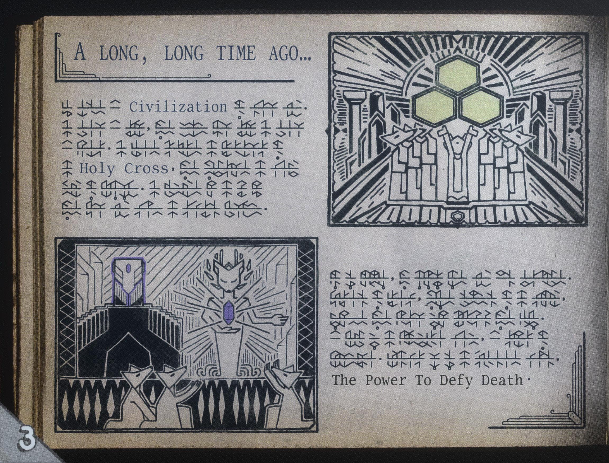
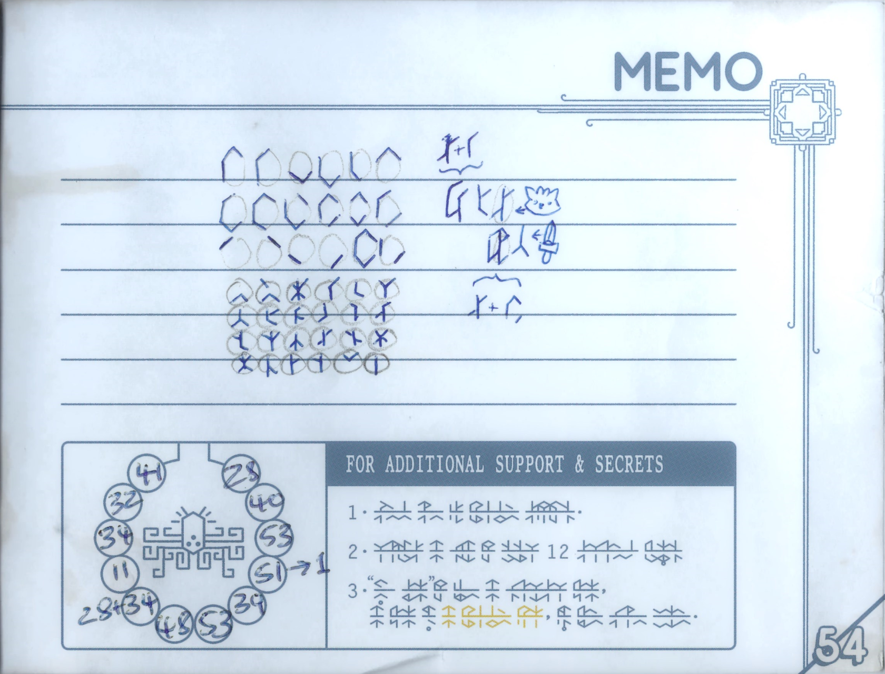

The Mysterious Manual
 The manual is the single most important element of the game. As you collect the pages, they give you hints and tips for the areas ahead or ones you left behind. There is a bit of backtracking but given that the areas aren't super large it's not too much of a headache. There are 56 pages in the manual in total. Not too many of those pages are fluff either. All the pages are needed to unlock the true ending of the game.
Answers in the Margins
Stories have been written down for ages. Tunic is no different here. Though in Tunic, you have to translate those pages. With 3 different endings, it's up to you how the game ends. The first few pages in the manual provide the most important information and even a little thank you letter for the game designer. The margins of the page may simply be a nice design element or they are like my high school notes and are the key to the puzzles of the page. I don't want to spoil anything so I am being very vague. I have include a link to the walkthrough at the bottom of the game. 